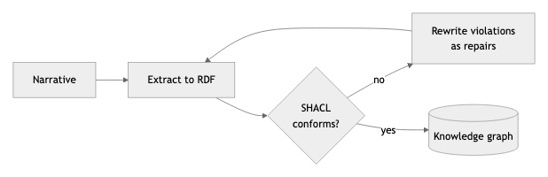
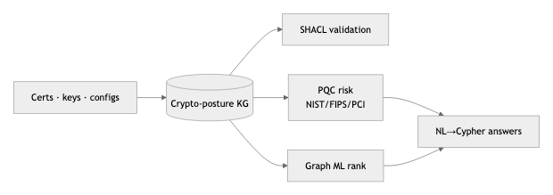
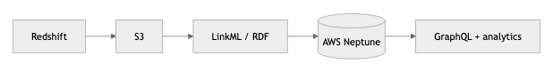
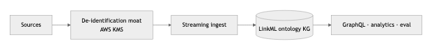
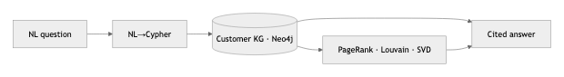
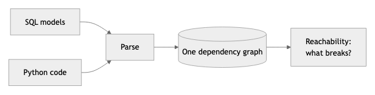
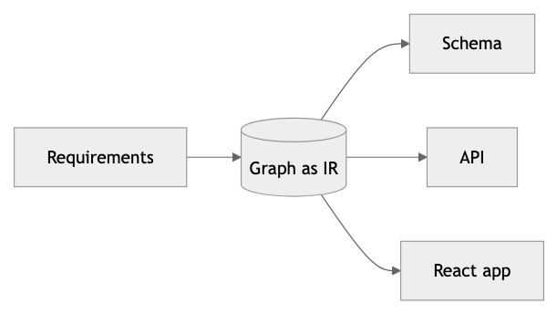
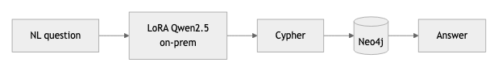
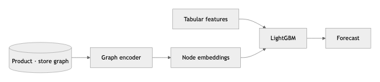

HCP Next-Best-Action Platform
Architecture
Healthcare · Recommendation · Knowledge Graph
Problem. Approval doesn't produce adoption. Commercial teams must turn clinical evidence, approved content, market access, and omnichannel engagement into one timely, compliant, explainable action per HCP.
Graph decision. An HCP-360 knowledge graph under a production next-best-action platform: retrieve → rank → adjust for business utility → enforce eligibility → explain → measure incrementality. Eligibility is a deterministic graph decision, kept separate from relevance.
- HCP-360 KG
- next-best-action
- eligibility rules
- incrementality
- MLR governance
Scale 500K HCPs · 45K HCOs · 1.2M nodes / 14M edges · 40K approved messages
Data Lakehouse + Kafka/Spark streaming · 340-feature store · point-in-time correct
Retrieval Five-retriever hybrid union — content lineage, affiliation, barrier matching
Ranking LightGBM LambdaMART over HCP × action × content × channel tuples
Trust SHACL validation · entity resolution · end-to-end lineage · deterministic eligibility
Serving Cited NL→Cypher answers · drift monitoring (PSI, NDCG) · P95 ~180 ms
Read the full architecture →
ontoloop
Public
Pharmacovigilance · SHACL
Problem. Drug-safety narratives must become structured records, but a language model will produce a record that reads perfectly and is quietly wrong.
Graph decision. Make the acceptance test a SHACL validator, not another model — an agent loop extracts to RDF and repairs until the shapes graph conforms. The verifier never calls an LLM.

View on GitHub →
crypto-risk-kg
Public
Security · Post-Quantum · Graph ML
Problem. Enterprises can't see which cryptographic assets are quantum-vulnerable, or who owns them, across thousands of certificates, keys, and protocols — and harvest-now-decrypt-later makes it urgent.
Graph decision. A 6,400-node crypto-posture knowledge graph with SHACL validation, PQC risk scoring against NIST/FIPS/PCI, and graph ML to rank vulnerable assets — queried in natural language via NL→Cypher, fully on-prem.
- Knowledge Graph
- Graph ML
- SHACL
- NL2Cypher
- on-prem LLM

View on GitHub →
cex-knowledge-graph
Private
Healthcare/Pharma · Neptune
Problem. Commercial customer data at an enterprise is scattered across 20+ systems with no shared meaning, so every question becomes a bespoke SQL request.
Graph decision. A production-shaped customer KG — Redshift → S3 → LinkML/RDF → AWS Neptune, an evolving ontology, graph analytics, GraphQL serving, and an evaluation framework to keep it honest.
- AWS Neptune
- LinkML
- RDF
- GraphQL

Private · walkthrough on request
mincalvina
Private
Privacy-first KG · Streaming
Problem. A commercial knowledge graph is only usable if sensitive identities never leak — de-identification can't be an afterthought bolted on at the end.
Graph decision. A de-identification moat (AWS Secrets Manager/KMS) wrapped around a streaming ingestion pipeline into an evolving LinkML ontology, with GraphQL, caching, graph analytics, and evaluation.
- LinkML
- KMS
- streaming
- graph analytics

Private · walkthrough on request
Graph-RAG customer intelligence
Prototype
E-commerce · Graph-RAG
Problem. Business teams want answers about customers in plain English, not another dashboard or a two-day SQL wait.
Graph decision. A 4,300-node / 225k-edge customer graph with PageRank, Louvain communities, and SVD embeddings, behind an NL→Cypher assistant that answers with citations.
- Neo4j
- graph embeddings
- NL2Cypher
- RAG

Case study · available on request
blastradius
Public
Data lineage · Reachability
Problem. A dropped column looks unused to dbt, then breaks a pandas script and a tablet app nobody linked to it.
Graph decision. Parse SQL and Python into one dependency graph, so "what breaks if I change this column" becomes a reachability query — statically, before the change ships.
- graph
- static analysis
- reachability

View on GitHub →
GraphForge
Prototype
Graph-as-IR · App generation
Problem. Turning business requirements into a working app means re-modeling the same domain by hand every time — schema, API, UI — and it drifts out of sync.
Graph decision. Use a knowledge graph as the intermediate representation: extract the domain into a graph, then generate the schema, API, and React app from it, so one model drives the whole build.
- graph-as-IR
- domain extraction
- codegen
- React

Prototype · walkthrough on request
Local NL→Cypher
Prototype
On-prem · Fine-tuning
Problem. Analysts want to ask a graph questions in plain English, but the data is sensitive and can't be sent to a hosted model.
Graph decision. An ontology-grounded NL→Cypher pipeline running fully offline (Neo4j + Ollama), with a LoRA-fine-tuned Qwen2.5 for the translation, validated against a held-out query set.
- NL2Cypher
- ontology-grounded
- LoRA (MLX)
- Neo4j

Prototype · walkthrough on request
Graph-augmented forecasting
Prototype
Retail · Graph ML
Problem. Store × SKU demand forecasts ignore how products and stores relate — cannibalization, substitution, and shared demand shocks.
Graph decision. A graph encoder over cross-product / cross-store relationships feeds node embeddings into a global LightGBM across 4,000+ SKUs × 33 stores. ML beats naive by ~23%, with an honest read on where the graph lift stays small.
- graph encoder
- node embeddings
- LightGBM
- spatiotemporal

Prototype · walkthrough on request